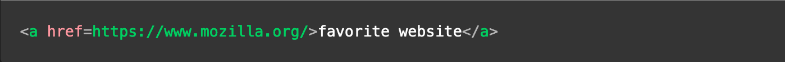

HTML
HTML (HyperText Markup Language) is the most basic building block of the Web. It defines the meaning and structure of web content. Other technologies besides HTML are generally used to describe a web page's appearance/presentation (CSS) or functionality/behavior (JavaScript).
Elements consist of
- A tag name
- Required or optional

An HTML element is set off from other text in a document by "tags", which consist of the element name surrounded by "<" and ">". The name of an element inside a tag is case-insensitive. That is, it can be written in uppercase, lowercase, or a mixture. For example, the tag can be written as or in any other way. However, the convention and recommended practice is to write tags in lowercase.
In Visual Studio Code, you can autmatically format code by following these steps
- Type ctrl-shift-p (windows) or cmd-shift-p (mac) to open the Command Palette
- In The Command Pallete, type format
- From the results, choose Format Doucment
CSS
Cascading Style Sheets (CSS) is a stylesheet language used to describe the presentation of a document written in HTML or XML (including XML dialects such as SVG, MathML or XHTML). CSS describes how elements should be rendered on screen, on paper, in speech, or on other media.
CSS is among the core languages of the open web and is standardized across Web browsers according to W3C specifications. Previously, the development of various parts of CSS specification was done synchronously, which allowed the versioning of the latest recommendations.
For Example